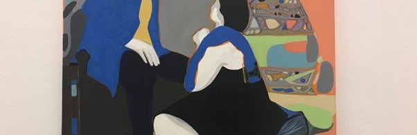
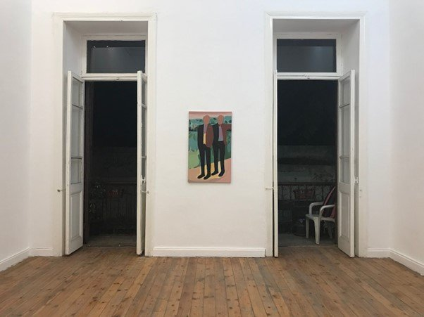
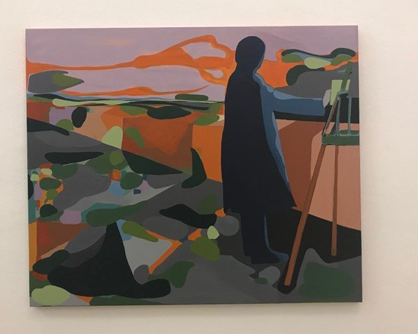
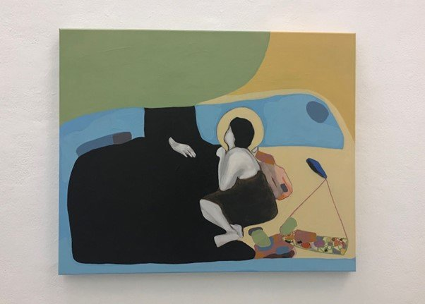
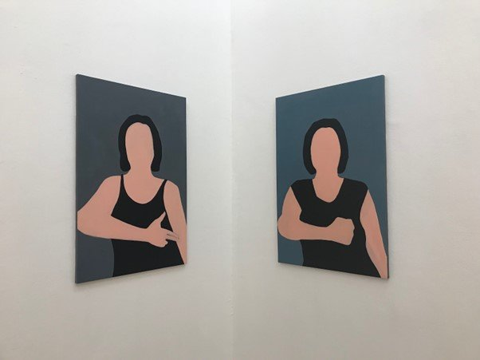

Originally published in Mada on 7 December 2018
By Ismail Fayed

Imane Ibrahim, Building Number Twelve Al Kamel Mohammed, exhibition view at Townhouse Gallery
I stand in the last room of the retrospective currently being held at the Albertina Museum in Vienna, visually stunned by the chaos of color and the subtle movement of brushstrokes, overcome with emotion as I read the accompanying description. Monet was almost blind during the last years of his very long career (which spanned almost six decades), and by this time, his brushstrokes had become more energetic and also more abstract, in a way prefiguring the work of artists who would come half a century or so after him.
The work displayed in Imane Ibrahim's first solo exhibition at Townhouse Gallery, Building Number Twelve Al Kamel Mohammed, might share few stylistic affinities with Monet, maybe a bit of Matisse here and there, in the way color is used as as a substitute for clear lines or in how it can define space. But the sensory memory of the act of painting on a canvas, the very artistry of the movement that Monet remembered when his eyesight failed him, is just as apparent in Ibrahim's paintings, albeit in not such an abstract way and with less vigorous brushstrokes and more color harmony. Ibrahim flattens the surface of her canvas, eschewing perspective, using an oversweep of color across the canvas space to create a natural effect and lines that float around each other. In doing so, the artist very delicately delineates shapes and depth, lending more weight to the chromatic effect of color than the actual geometry of the space.
The title of the exhibition itself refers to a novel that Ibrahim is currently writing (and from which she read extracts at Townhouse), where, in one chapter, two lovers meet at the eponymous address. The artworks exhibited bear only an indirect relation to the story, perhaps by virtue of association and proximity. Still, Ibrahim chose the title and included the reading because she wanted to showcase her current process, whereby she moves between text and painting, exploring how one medium might echo — or, in some cases, influence — the other.
Born in 1990, Ibrahim is a painter trained at the Faculty of Fine Arts at Alexandria University and belongs to the generation who came into its own in the aftermath of the revolution, witness to the demise of the brief but intense moment where there was a flourishing of the contemporary art scene in Cairo. In her work, the dichotomies of the academic versus the contemporary, the institutional versus the independent, and conceptual versus fine art are present in subtle yet profound ways. Within this context, what would it mean to apply the typologies of academic painting to Egypt's contemporary reality?

Imane Ibrahim, portrait against contemporary Egyptian landscape
Ibrahim answers this question by showing that the placement of a portrait against the backdrop of a contemporary landscape in Egypt is a valid proposition, one that needn't necessarily reproduce an 18th century, Orientalist painting. In one of her artworks, we see the figure of a man, a dandy with an abstract face set against the backdrop of a farmland, with palm trees and green plots in varying shades of olive, teal, and yellow-green against a magenta sky — the chromatic opposite of green. The contours of the mysterious figure are defined by the soft brushstrokes of color, rather than any demarcated lines. The view in the background, meanwhile, is one that could be seen by anyone driving along the ring road or any highway along greater Cairo. The same typology, a portrait against a landscape, is repeated four more times, with other dandy-esque figures in suits against agrarian landscapes, or a single solitary female figure against a similar backdrop.
The work in Building Number Twelve mirrors a desire to harmonize the organic with the urban in a way that is truly emblematic of a city like Cairo. In redefining the genre of portraiture set against landscape, Ibrahim brings a specifically contemporary sensibility to her work, one which evinces all the questioning that a rigorous conceptual process often entails, but is also reflective of the particular memory of the physical act of painting itself. For instance, one can see questions of the artist, their body and their process being addressed in another painting in the show that depicts a painter working at their easel while facing a parapet, blots of color floating in the background. Although it gives off a psychedelic visual effect, the duplication of colors used for sky, earth and urban landscape also gives the sense of an uneasy amalgamation of thoughts, forms and lines. The mental process may be conceptual and filled with incongruities, but the painter still paints, shapes and thoughts melting into each other.

Imane Ibrahim, painter working at easel with floating colors
A significant part of Ibrahim's academic research has been in the field of feminist art. The question of the female body and female presence manifests itself differently at different times throughout the exhibition: from a woman seated on the floor, a halo around her head, opposite an enigmatic figure in a flowing black robe (the grim reaper? A matriarch? An angel?) to what looks like a domestic scene of a couple, perhaps indicating narrative undertones that resonate with Ibrahim's novel. Both works feature the same woman, but in the latter, she is seated opposite what appears to be a man in a suit, and there is a heightened sense of intimacy. The woman's soft voluptuousness and almost supplicating posture bring to mind a sense of religious iconography present in the first painting. Yet, while the abstract figures and faces give little chance to discern a particular "gender" for the protagonists in both settings, what is apparent is the vulnerability inherent in any form of intimacy.

Imane Ibrahim, intimate domestic scene with abstract figures
Questions around the presence and representation of women are also manifest in a series of portraits of women posing with their arms across their chests — mostly pointing their fingers like guns, with one clenching her hand in a fist. The shape of their faces is once again abstract and their bodies would only be perceived as "feminine" because of the way their soft lines have been contoured in what appears to be the shape of a female body. Once again, Ibrahim challenges our expectations of what female bodies should look like and how they should be represented.

Imane Ibrahim, portraits of women with arms across chests, pointing fingers like guns
Using a classic genre of academic painting — the portrait — Ibrahim gently paints and repaints, adding layers to her process of questioning. She preserves the sensory memory of the physical act of painting, all the while permeating her work with ideas that leave the glossy surface dense with pigment and meaning.